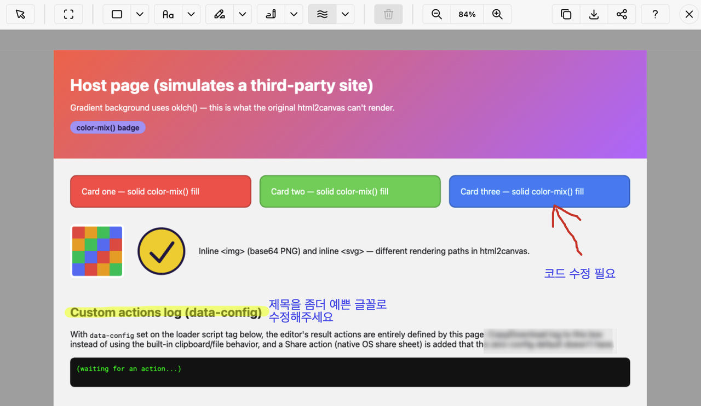

지난 글에서 예고한 대로 돈 벌기 첫 실험으로 내가 만들었던 코드를 제품으로 만들어 보기로 했다. 여러 후보 중 웹페이지 캡처/마킹 도구를 선택했고 markbit이라는 결과물로 공개했다.
markbit이란
간단히 말해 스크린샷 이미지에 주석을 마킹하는 도구다. 이미지를 붙여 넣거나 웹페이지를 캡처할 수 있고 그 위에 여러 가지로 마킹한 다음 다운로드나 공유가 가능한 JavaScript 패키지와 웹 페이지다.
SI 프로젝트를 하다 보면 매번 테스트 단계 때마다 테스터들이 하는 작업이 있다. 화면을 캡처해서 그림판이나 PPT에 붙이고 이런저런 표시나 텍스트를 입력하고 문서에 넣거나 공유하는 것이다. 이 과정을 테스트 중인 사이트 안에서 끝낼 수 있게 하려는 것이다.
- 웹페이지 캡처 또는 이미지 불러오기
- 사각형, 자유 그리기, 형광펜, 텍스트, 블러, 자르기
- 결과 이미지를 클립보드에 복사, 다운로드, 공유
- 회원 가입은 없고 서버에 올리지도 않는다. 스크린샷 처리는 브라우저 안에서만 이루어진다.

이미 비슷한 도구들이 있지만(Marker.io, BugHerd 등) 이건 JavaScript 패키지라 직접 웹사이트에 넣을 수 있다는 점이 다르다.
즉, <script> 태그를 통해 웹페이지에 넣으면 단축키를 눌러 화면을 캡처하고 바로 주석 마킹이 가능하다.
<script
type="module"
src="https://markbit.abcbox.kr/loader.js"
data-hotkey="ctrl+shift+m"
></script>작업 과정
원래 이 마킹 도구는 예전에 이슈 관리 시스템을 만들면서 구현했던 기능이었다. 이슈 관리도 이미 다양한 제품이 나와 있고 특히 Jira라는 상용 제품이 시장을 장악한 상태라 경쟁이 아니라 틈새 수요를 노리기 위해 만든 것이었다. 그런데 이렇게 다시 그중 작은 부분 하나를 제품으로 만들게 됐다.
하지만 독립 제품으로 만들기 위해서는 자잘한 일이 많다.
- 원래 프로젝트에서 해당 코드만 떼어내기
- UI, 사용 방법 등 범용성 있게 수정하기
- 테스트 강화하기
- 랜딩 페이지, 데모 페이지 만들기
이런 일은 AI에게 맡기기 딱 좋았다. Claude를 사용해 하루 한 두 시간씩 며칠 만에 준비가 끝났다.
인프라는 공짜로
랜딩 페이지를 올리려면 서버가 필요한데 도메인은 이미 있으니 공짜 호스팅 서비스를 찾았다. abcbox.kr 도메인에 Cloudflare를 붙여 markbit.abcbox.kr로 올렸다. 정적 파일은 Cloudflare Pages가 서비스하고 필요한 API는 Pages Functions로 구현하고 데이터는 D1(SQLite)에 저장한다. 이 정도 규모에서는 비용이 거의 들지 않는다.
Cloudflare 말고도 Vercel, AWS Lambda 등 몇 곳을 이용할 수 있는데 이미 abcbox.kr 블로그도 Cloudflare를 사용하고 있어 같은 패턴으로 작업했다.
방문 통계는 개인 식별 정보 없이 날짜별 이벤트 건수만 D1에 저장한다.
돈을 벌 방법
일단 소스를 GitHub에 MPL 2.0 라이선스로 공개했다. MPL은 파일 단위 카피레프트라서 markbit을 각자의 소스에 포함해서 사용하는 것은 자유롭다. 하지만 소스를 고쳐서 그 수정 내용을 공개하고 싶지 않거나 아예 MPL 조건을 신경 쓰고 싶지 않은 사용자에게는 상업용 라이선스를 판매하려고 한다. 지난 글에서 본 fullPage.js처럼 제품은 공짜로 풀고 권리를 파는 방식이다. fullPage.js는 GPL이라 상업적으로 쓰려면 라이선스를 살 수밖에 없지만 MPL은 그대로 쓰면 사지 않아도 된다. 그래도 진짜 필요한 도구라면 수정 자유나 커스터마이징 등 지원 때문에 돈을 낼 거라고 봤다.
솔직히 이게 당장 돈을 벌 수 있을 거라고 기대하지는 않는다. 말 그대로 실험으로 생각하고 있고 (내가 볼 때) 쓸 만한 기능 하나를 제품으로 내놨을 때 수요가 있는지 확인하는 게 목표다. 수요가 보이면 그때 팀 기반 관리나 이슈 트래커 연동 같은 기능으로 확장할 수도 있을 것이다.
GeekNews Show
9월 24일에는 GeekNews의 Show 게시판에 소개 글을 올렸다. 개발자들이 주로 보는 사이트라 혹시나 관심이 생길까 은근히 기대가 됐다.
하지만 며칠 지난 지금까지 추천도 댓글도 0개로 조용히 묻히고 있다.
현재 성적표
랜딩 페이지에 붙여 둔 카운터를 확인해보니 이렇다. 날짜는 UTC 기준이고 재방문은 간단한 localStorage 플래그로 구분한다.
| 날짜 | 페이지 조회 | 이미지 불러오기 | 재방문 |
|---|---|---|---|
| 9/24 | 26 | 3 | 1 |
| 9/25 | 5 | 1 | - |
| 9/26 | 6 | - | - |
9월 24일은 약간 반짝했지만 아마도 내가 배포하고 확인하느라 들어간 것도 있는 것 같고 실제로 해본 사람이 거의 없이 점점 수치가 떨어지고 있다.
별개로 문의라든가 피드백 링크가 붙어 있으므로 이를 통해 들어오는 건수는 따로 집계하는데 전체 0건이다.
Google에서는 "markbit"만 쳐서는 안 나오고 "markbit geeknews"로 검색해야 겨우 보인다. 한마디로 아직은 적막하다.
실전 투입
마침 지금 참여하고 있는 SI 프로젝트가 테스트 단계라 여기도 적용하려고 한다. markbit을 만들게 된 이유가 이런 테스트의 불편함이었으니 실전에도 딱 맞다.
다만 서브시스템에 따라서 모두 적용할 수는 없고 내가 작업한 시스템에만 일단 붙여서 고객과 테스터의 반응을 보고자 한다. 이들의 피드백이 중요한 자산이 될 수 있고 또 이런 고객사가 상업용 라이선스를 살 잠재 고객이기도 하다.
실험은 계속된다
크게 기대한 건 아니었으니 실망할 것도 없다. 짧은 시간에 제품화라는 과정을 거쳐 보고 피드백을 받는 데 만족할 수도 있다. 정말 상용화가 필요하다면 뭘 해야 할지 알고 그에 대응할 수 있다는 게 실험의 의미라고 생각한다.
앞으로 3주 정도는 랜딩 페이지 반응을 보려고 한다. 이미지 불러오기 이후 복사나 다운로드까지 이어지는지, 현장 테스터는 어떻게 사용하는지, 의견은 어떤지, 도입이나 라이선스 문의가 생기는지가 핵심이다. 이 결과는 다음 글에서 정리해 보자.
댓글
댓글을 불러오는 중입니다.